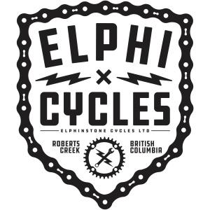

Home
Who are we
What we do
Our projects
Contact us
Our projects

Bulkley River and Morice River Fish Passage Restoration Planning
View Report
Upper Elk River and Flathead River Fish Passage Restoration Planning
View Report
Parsnip River Fish Passage Restoration Planning
View Report